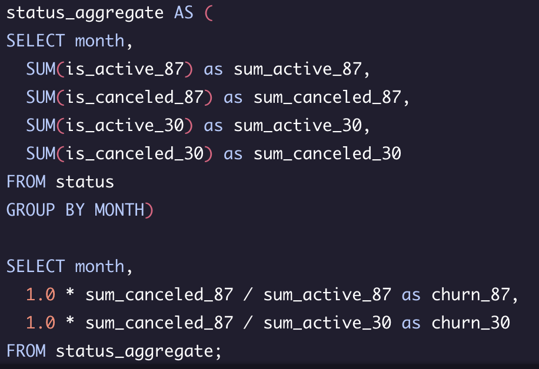

Calculating Churn Rates Project
The project is from Codecademy's Analyze Data with SQL course. Four months into launching Codeflix, management asks you to look into subscription churn rates. It’s early on in the
business and people are excited to know how the company is doing.
The marketing department is particularly interested in how the churn compares between two segments of users. They
provide you with a dataset containing subscription data for users who were acquired through two distinct channels.
First things first, I'll take a quick look at the data. After running a select distinct on segment, I was able to establish there are two segments 30 and 87.

Next, I'd like to get a sense of data. I want to see the min and max for subscription start:

Query Results

In my analysis, I want to establish the churn rate. In order to do this I must first establish the first and last day of each month. I'm going to use a with (CTE) statement so I can use this table later in my query

With the first and last day established, I'm now going to cross join with table subscriptions.

Next, I'll use a CASE statement to simplify the data. I'll create a few buckets.
is_active_87 and is_canceled_87
is_active_30 and is_active_30

With all this out of the way I can finally start making useful of the data.
Query Results / Analysis
There is not much difference in churn amongst the two groups but we can see there is a significatly higher churn rate in march.